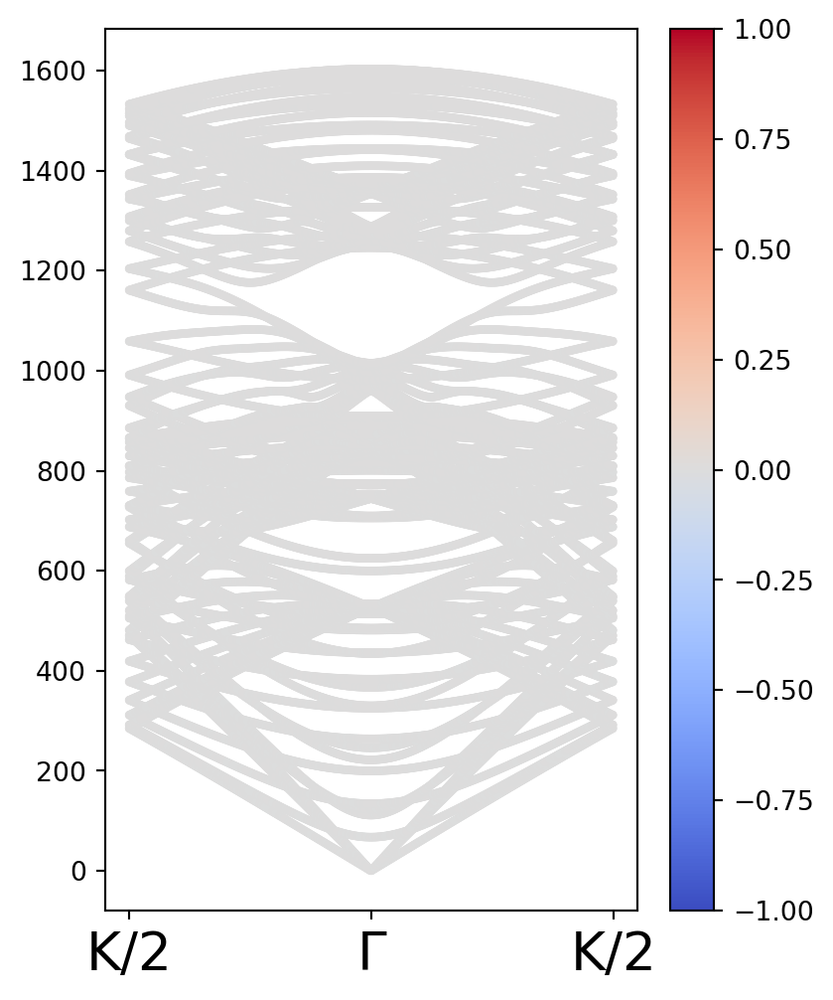

#Primero, se importan las paqueterías a usar.
from pylab import *
from ase.build import graphene_nanoribbon
import plotly.graph_objects as go
from numpy import linalg as LA
from scipy.linalg import ishermitian2 Descripción de una nanocinta de grafeno
Este código busca describir los modos vibracionales de un ribbon de grafeno. Para ello, se usa la paquetería ASE para importar un objeto con las posiciones y masas del ribbon. Este ribbon se construye especificando los índices (n,m) que definen la celda unitaria. En el código, se implementa una función que calcula los primeros vecinos del ribbon, especificando si son intracelda o extracelda. Esto permite hacer una gráfica del objeto.
Posteriormente, se define una función que consigue obtener el tensor de constante de red entre cualesquiera dos sitios. Para ello, se parte del tensor de esfuerzos de los carbonos en grafeno y se aplican las transformaciones pertinentes.
#Se construye el objeto de nanotubo, se obtienen las posiciones y masas de cada átomo.
cnt1 = graphene_nanoribbon(10,2, type='zigzag')
r = cnt1.get_positions()
X,Y,Z = cnt1.get_positions().T
nsites = len(X)
a1,a2,a3 = array(cnt1.get_cell())
cluz = 3e10 #cm/
masas = cnt1.get_masses()
masas = 1.66e-27*masas
print(f"nsites = {nsites}")
print(f" a1 = {a1}")
print(f" a2 = {a2}")
print(f" a3 = {a3}")nsites = 40
a1 = [0. 0. 0.]
a2 = [0. 0. 0.]
a3 = [0. 0. 4.91902429]#Debajo, se definen las funcioens que buscan los primeros vecinos. Además, se define la función que permite graficar el ribbon.
def findnn(X,Y,Z):
nn = {}
for todos in range(len(X)):
UnSitio = array([X[todos],Y[todos],Z[todos]])
DataUnSitio = kron(ones(nsites),UnSitio)
DataUnSitio = DataUnSitio.reshape(nsites,3)
Dif = DataUnSitio - array([X,Y,Z]).T
normas = []
for n in range(len(Dif)):
norm = sqrt(dot(Dif[n],Dif[n]))
normas.append(norm)
normas = array(normas)
logical = normas<1.44 # distancia en Ang para encontrar los vecinos
nn[todos] = delete( logical.nonzero()[0], \
where(logical.nonzero()[0] == todos) )
return nn
def findnn_minus(X,Y,Z):
nn_minus_a3 = {}
for todos in range(len(X)):
UnSitio = array([X[todos]+a3[0],Y[todos]+a3[1],Z[todos]+a3[2]])
DataUnSitio = kron(ones(nsites),UnSitio)
DataUnSitio = DataUnSitio.reshape(nsites,3)
Dif = DataUnSitio - array([X,Y,Z]).T
normas = []
for n in range(len(Dif)):
norm = sqrt(dot(Dif[n],Dif[n]))
normas.append(norm)
normas = array(normas)
logical = normas<1.44 # distancia en Ang para encontrar los vecinos
nn_minus_a3[todos] = delete( logical.nonzero()[0], \
where(logical.nonzero()[0] == todos) )
return nn_minus_a3
def findnn_plus(X,Y,Z):
nn_plus_a3 = {}
for todos in range(len(X)):
UnSitio = array([X[todos]-a3[0],Y[todos]-a3[1],Z[todos]-a3[2]])
DataUnSitio = kron(ones(nsites),UnSitio)
DataUnSitio = DataUnSitio.reshape(nsites,3)
Dif = DataUnSitio - array([X,Y,Z]).T
normas = []
for n in range(len(Dif)):
norm = sqrt(dot(Dif[n],Dif[n]))
normas.append(norm)
normas = array(normas)
logical = normas<1.44 # distancia en Ang para encontrar los vecinos
nn_plus_a3[todos] = delete( logical.nonzero()[0], \
where(logical.nonzero()[0] == todos) )
return nn_plus_a3
def GetDATAplot(X,Y,Z,nn,nn_minus_a3,nn_plus_a3):
DATA = [go.Scatter3d(x=X, y=Y, z=Z,mode='markers',showlegend=False)]
for key in nn: # para cada sitio
for n in nn[key]: # para cada vecino
DATA.append( go.Scatter3d(x=[X[key],X[n]], y=[Y[key],Y[n]], z=[Z[key],Z[n]],mode='lines',line=dict(color='blue'),showlegend=False))
for key in nn_minus_a3: # para cada sitio
for n in nn_minus_a3[key]: # para cada vecino
DATA.append( go.Scatter3d(x=[X[key]+a3[0],X[n]], y=[Y[key]+a3[1],Y[n]], z=[Z[key]+a3[2],Z[n]],mode='lines',line=dict(color='red'),showlegend=False) )
for key in nn_plus_a3: # para cada sitio
for n in nn_plus_a3[key]: # para cada vecino
DATA.append( go.Scatter3d(x=[X[key]-a3[0],X[n]], y=[Y[key]-a3[1],Y[n]], z=[Z[key]-a3[2],Z[n]],mode='lines',line=dict(color='red'),showlegend=False) )
annos = []
# for n in range(len(X)):
for n in range(len(X)):
anno = dict(x=X[n],
y=Y[n],
z=Z[n],
text=str(n),
showarrow=False,
arrowhead=0,
font=dict(color='black'),
ax=0,
ay=0,
bgcolor="white",
opacity=0.2)
annos.append(anno)
return DATA,annos#Los primeros vecinos se almacenan en un diccionario.
nn = findnn(X,Y,Z)
nn_minus_a3 = findnn_minus(X,Y,Z)
nn_plus_a3 = findnn_plus(X,Y,Z)#Se construye la imagen del ribbon.
DATA,annos = GetDATAplot(X,Y,Z,nn,nn_minus_a3,nn_plus_a3)
fig = go.Figure(data=DATA)
fig.update_layout(scene=dict(annotations=annos))
fig.show()#Se define la función que calcula el tensor de constante de red para cualesquiera dos puntos.
KL1 = 365.0 #N/m
KT1 = 245.0 #N/m
KZ1 = 98.2 #N/m
Krib = array([[KL1,0,0],
[0,KZ1,0],
[0,0,KT1]],dtype=complex)
def KGeneral(r1,r2):
x1,z1 = r1[0],r1[2]
x2,z2 = r2[0],r2[2]
x = x2 - x1
z = z2 - z1
θ = arctan(z/x)
T = array([[cos(θ) ,0. ,-sin(θ)],
[0. ,1. ,0],
[sin(θ),0. ,cos(θ)]],dtype = complex)
return dot(T,dot(Krib,inv(T)))#Ahora, se calcula una función que construye la matriz dinámica para cada punto en el espacio k, y obtiene las eigenfrecuencias y pseudomomento asociado.
#Para ello, se definen una función que calcula la polarización de fonón y otra que calcula el valor esperado.
def OperadorPseudomomento(n):
Sz = array([[0,-1J,0],
[1J,0,0],
[0,0,0]],dtype=complex)
return np.kron(np.eye(n,dtype=complex),Sz)
S = OperadorPseudomomento(nsites)
def expectedval(vec,S):
return dot(np.conj(vec).T,dot(S,vec)).real
def Eigenfrequencies(kvec):
MatrizDinamica = {}
MatInt = array(range(nsites*nsites)).reshape(nsites,nsites)
for i in range(len(X)):
ri = [X[i],Y[i],Z[i]]
Kdiagi = np.zeros((3,3))
for n in nn[i]:
rn = [X[n],Y[n],Z[n]]
Kdiagi = Kdiagi + KGeneral(ri,rn)
for n in nn_plus_a3[i]:
rn = [X[n],Y[n],Z[n]] + a3
Kdiagi = Kdiagi + KGeneral(ri,rn)
for n in nn_minus_a3[i]:
rn = [X[n],Y[n],Z[n]] - a3
Kdiagi = Kdiagi + KGeneral(ri,rn)
MatrizDinamica[(nsites)*i + i] = Kdiagi/masas[i]
for j in range(i+1,len(X)):
rj = [X[j],Y[j],Z[j]]
if j in nn[i]:
K = -1*KGeneral(ri,rj)/sqrt(masas[i]*masas[j])
MatrizDinamica[(nsites)*i + j] = -1*KGeneral(ri,rj)/sqrt(masas[i]*masas[j])
MatrizDinamica[(nsites)*j + i] = K
elif j in nn_plus_a3[i]:
K = -1*KGeneral(ri,rj + a3)/sqrt(masas[i]*masas[j])
MatrizDinamica[(nsites)*i + j] = K*exp(1J*kvec)
MatrizDinamica[(nsites)*j + i] = K*exp(-1J*kvec)
elif j in nn_minus_a3[i]:
K = -1*KGeneral(ri,rj - a3)/sqrt(masas[i]*masas[j])
MatrizDinamica[(nsites)*i + j] = K*exp(-1J*kvec)
MatrizDinamica[(nsites)*j + i] = K*exp(1J*kvec)
else:
MatrizDinamica[(nsites)*i + j] = np.zeros((3,3))
MatrizDinamica[(nsites)*j + i] = np.zeros((3,3))
MatrizDinamica = dict(sorted(MatrizDinamica.items()))
Dm = [ [MatrizDinamica[i] for i in rw] for rw in MatInt ]
Dynamical = asarray(np.bmat(Dm))
ω2,eigvecs = eigh(Dynamical)
pseudomom = []
for i in range(len(ω2)):
eigvec = eigvecs[:,i]
pseudomom.append(expectedval(eigvec,S))
return sqrt(abs(ω2))/2/pi/cluz,pseudomom#Finalmente, se hace el cálculo de las bandas de frecuencia.
Kpoints = np.linspace(-pi,pi,500)
Klabels = [r"K/2",r"Γ",r"K/2"]
Kticks = concatenate([[0],[250],[500]])
Bandas = []
Pseudomom = []
Kevaluate = (list( map(Eigenfrequencies,Kpoints) ))
for ω2,psmom in Kevaluate:
Bandas.append(ω2)
Pseudomom.append(psmom)
Bandas = array(Bandas)
Pseudomom = array(Pseudomom)
numK,nbands = shape(Bandas)
kenum = arange(numK)
fig,ax = plt.subplots(ncols=1,nrows=1,figsize=(4.5,6))
for j in range(nbands):
grafica = ax.scatter(kenum,Bandas.T[j],c = Pseudomom.T[j],cmap = "coolwarm",vmax = 1, vmin = -1,s = 5)
fig.colorbar(grafica)
ax.set_xticks(Kticks)
#ax.set_ylim(1,100)
ax.set_xticklabels(Klabels,fontsize = 20);